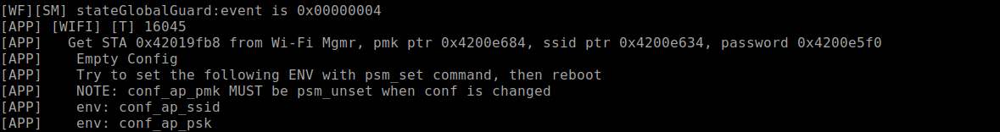
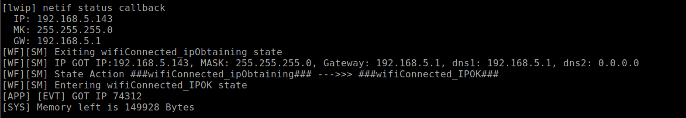
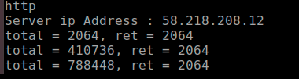

6. Http client¶
6.1. Overview¶
This example mainly introduces how to create a socket and connect to the specified Http server to obtain data.
6.2. Preparation and use steps¶
Before using it, you need to prepare a usable URL and network.
Steps for usage:
Compile
customer_app/sdk_app_http_client_socketthe project and download the project;Enter the command to turn on wifi in the terminal:,
stack_wifienter the command to connect to wifi:, and confirm that the wifi connection is successful (for example, enter: wifi_sta_connect bl_test_005 12345678);wifi_sta_connect <name> <key>Use
httpthe command to download via socket ways.
6.3. Application examples¶
By
hostnameacquiringhostinfo
struct hostent *hostinfo = gethostbyname(hostname);
if (!hostinfo) {
printf("gethostbyname Failed\r\n");
return -1;
}
Creating a
socketconnection and sends http request.
if ((sockfd = socket(AF_INET, SOCK_STREAM, 0)) < 0) {
printf("Error in socket\r\n");
return -1;
}
/*---Initialize server address/port struct---*/
memset(&dest, 0, sizeof(dest));
dest.sin_family = AF_INET;
dest.sin_port = htons(PORT);
dest.sin_addr = *((struct in_addr *) hostinfo->h_addr);
//char ip[16];
uint32_t address = dest.sin_addr.s_addr;
char *ip = inet_ntoa(address);
printf("Server ip Address : %s\r\n", ip);
/*---Connect to server---*/
if (connect(sockfd,
(struct sockaddr *)&dest,
sizeof(dest)) != 0) {
printf("Error in connect\r\n");
return -1;
}
/*---Get "Hello?"---*/
memset(buffer, 0, MAXBUF);
char wbuf[]
= "GET /ddm/ContentResource/music/204.mp3 HTTP/1.1\r\nHost: nf.cr.dandanman.com\r\nUser-Agent: wmsdk\r\nAccept: */*\r\n\r\n";
write(sockfd, wbuf, sizeof(wbuf) - 1);
Get the data of the http response, and print the time taken to get the data and the transmission speed when finished.
while (1) {
ret = read(sockfd, recv_buffer, BUFFER_SIZE);
if (ret == 0) {
printf("eof\n\r");
break;
} else if (ret < 0) {
printf("ret = %d, err = %d\n\r", ret, errno);
break;
} else {
total += ret;
/*use less debug*/
if (0 == ((debug_counter++) & 0xFF)) {
printf("total = %d, ret = %d\n\r", total, ret);
}
//vTaskDelay(2);
if (total > 82050000) {
ticks_end = xTaskGetTickCount();
time_consumed = ((uint32_t)(((int32_t)ticks_end) - ((int32_t)ticks_start))) / 1000;
printf("Download comlete, total time %u s, speed %u Kbps\r\n",
(unsigned int)time_consumed,
(unsigned int)(total / time_consumed * 8 / 1000)
);
break;
}
}
Closed
socket.
close(sockfd);
In
customer_app/sdk_app_http_client_socket/sdk_app_http_client_socket/demo.cthe call to the function in the initialization http commandstatic void _cli_init()http_client_cli_init()